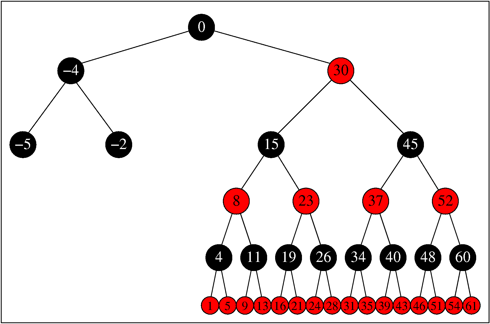

bij
ALGORITMEN en GEGEVENSSTRUCTUREN
2017-2018
- LES 4
- ROOD-ZWARTE
BOMEN
5
oktober 2017
Rood-zwarte bomen zijn altijd nogal evenwichtig. Je betaalt er wel een prijs voor: toevoegen en verwijderen is ingewikkeld. Voor we ze implementeren zijn hier een paar toepassingen om op papier op te lossen.
De eerste oefening maakt duidelijk dat top-down- en bottom-upmethodes niet altijd hetzelfde resultaat opleveren. Bekijk de kleine boom.

Verwijder de knoop met sleutel 8. Probeer het eerst bottom-up, daarna top-down. Verwijder ook eens 15: eerst bottom-up, dan top down.
Bij de tweede oefening hebben we een zeer scheve boom:
als l de diepte aan de linkerkant is, en r de diepte aan de rechterkant, dan is
r=2l+1.Slechter kan niet bij een rood-zwarte boom, en elke bewerking zal de situatie verbeteren. Probeer maar: elke keer vertrekkend van de beginsituatie van de tekening moet je
- sleutel 6 bottom-up toevoegen.
- sleutel -2 top-down verwijderen.
Als je dit alles implementeert moet je een rood-zwarteboomklasse hebben. Omdat elke knoop een kleur heeft moet er dan in elke knoop een attribuut bijkomen. Ook treaps hebben een attribuut. Een manier om een gelijkaardige structuur (een binaire boom met de data ingepakt in een wrapper) te bekomen als bij zoekbomen is om een klasse BinboomMetKnoopdata<Sleutel,Data,Knoopdata> te maken. Als je echt zoveel mogelijk code wil bewaren, kan je deze laten overerven van de Zoekboomklasse:
class ZoekboomMetKnoopdata<Sleutel,Data,Knoopdata>: public Zoekboom<Sleutel,pair<Data,Knoopdata> >
Dit laatste wordt door sommigen enthousiast (want code wordt hergebruikt) en door anderen sceptisch (want niet gemakkelijk te begrijpen) onthaald.Het is mogelijk een tussenweg te bewandelen en te zorgen voor een
enum RZWKleur {rood, zwart};
class RZWBoom<Sleutel,Data,>: protected Zoekboom<Sleutel,pair<Data,RZWKleur> >
Ook deze weg levert problemen op, onderandere door de friend-declaratie.Tenslotte is er de lelijke weg: je kopieert gewoon de code van een zoekboom en verandert overal Zoekboom door RZWBoom. Dat is niet flexibel --als je verbeteringen aanbrengt aan de Zoekboomcode wordt die niet meegenomen naar de RZWBoom, maar het werkt wel.
Ook voor deze nieuwe klasse ga je eerst een repOK()-functie schrijven. Zoals gebruikelijk bij overerving is de repOK()-functie van de bovenklasse een deel van die voor de onderklasse.
Daarna schrijf je een bottom-up toevoegmethode. De voorbeeldjes op de tekeningen leveren handige stof voor tests. Daar zit je met een probleem: hoe zorg je ervoor dat je een rood-zwarte boom krijgt met de structuur vanop de tekeningen?
Programmeertip: elke knoop is de wortel van een (deel)boom. Het is handig als je een functie geefKleur() maakt die geen lid is van de Knoopklasse maar van de Boomklasse. Waarom is dat?